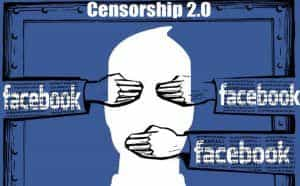

< < < Back
Mainstream Media Calls Real News “Fake” Because Their Narrative Is Collapsing – Return Of Kings
There are those who think we should only get our news from “official” sources. You know, like the blonde telling you what to believe in between hocking a hockey game.
If there’s anything the 2016 election showed us, it’s that the American people are increasingly distrustful of and not listening to the commands laid out by the once mainstream media. They’re increasingly reticent to commit national and demographic suicide under the guise of “diversity” and other nebulous ideals. They’re desperate not only to “drain the swamp” but to restore some sense of national pride and stability to the declining USA.
In response, the controllers of the presstitutes (the people who really run the world) are already hard at work trying to find some way to create a false narrative about “fake news” sites in order to lay the ground work for censorship and control. The Internet has all but destroyed the corporate-government narrative, and there is a shit fit happening at the highest levels of the propaganda ministry (i.e. CNN, ABC, CBS, NBC, et. al.) because they have learned the American people know how full of shit they really are.
Sites like Return Of Kings are on the front lines of this war in support of free speech and it is vitally important we stay on top of our game to avoid a reversion to the managed propaganda the centralized control of mass media gave us over the last 50 years.

Hackers and leakers play right into the hands of the censorship narrative
Make no mistake, one of the reasons leakers of misdeeds done by politicians and the elite they work for have been allowed to continue leaking dirty laundry is because it plays into the hands of those with designs on censorship and re-gaining control of the information the sheeple get to listen to. Having Julian Assange and Edward Snowden doing leaks of information and giving them extensive press coverage plays right into the hands of the censorship brigade because they can also play the protecting national security game when the time to silence dissent comes.
Fake news is only the first assault in what is sure to become a full scale war on free speech on the Internet. We can be thankful Trump won the election rather than The Bitch since his election will slow the process of censorship, but the aggressiveness of the “fake news” narrative shows us how determined some people are to shut us up and shut us down.
The New York Times is already on the front lines of this assault on free speech on the Internet. Only days after The Bitch lost the election, publisher Arthur Sulzberger published a Mea Culpa and promised to rededicate the newspaper to “honest” reporting.
We cannot deliver the independent, original journalism for which we are known without the loyalty of our subscribers… [The New York Times promises to] give the news impartially, without fear or favor… We also approach the incoming Trump administration without bias.
Don’t buy into it. This is what’s known in Public Relations as a diversion tactic. While we focus on our seeming victory, they’re already moving on to their next false narrative – so-called fake news. No sooner than the ink dried on the promise to give Trump a chance, The New York Times was moving to shut up the very people who made possible his rise to power – the alt-right and alternative news web sites.
While some fake news is produced purposefully by teenagers in the Balkans or entrepreneurs in the United States seeking to make money from advertising, false information can also arise from misinformed social media posts by regular people that are seized on and spread through a hyperpartisan blogosphere.
They did a spurious case study on how a “rumor” got started about protesters being bussed in to protest at Trump rallies. Never mind the mainstream media is a business that runs lock, stock and barrel on fake news. Almost every narrative they create is a false one. One need do no more than a Google search to discredit many, if not most of the mainstream media’s stories. The hypocrisy is astounding.
Pulling The Plug

Facebook censorship algorithms are nothing compared to the elite’s agenda of eliminating free speech online
Whether or not the “fake news” narrative gains traction, the next step will be for the elite to create a problem that affects millions of people online, then follow through with the Hegelian Dialectic with a pre-ordained “solution” to “make everyone safer online” and to “stop the spread of false information” while “protecting free speech” online by destroying it.
Look for no less than a figurative “Internet 9/11” if the elite become desperate enough.
They’ll pull the plug on the backbone of the Internet, shutting down e-commerce and communication online for a few days, blame it on a “fake news” story (just like Benghazi was blamed on a YouTube video) then spring in to save us from ourselves by passing all sorts of creative laws and restrictions aimed at nothing more than eliminating competition to the corporate-government narrative and gutting yet another of our Bill of Rights protections.
Make no mistake, Freedom of Speech is the most important of Amendments to the Constitution. Once that is taken away, it’s Game Over.
Obama has already floated the idea of silencing those of us who “cling to our guns and religion” and continues this narrative even after the election of Trump
Obama has already been floating the idea of official news web sites. This is nothing more than proposing the creation of the American equivalent of Pravda in the Soviet Union, in which only the state-approved newspaper was considered the truth and everything else was considered lies. Obviously, the New World Order socialist narrative would be the only truth under a system such as this, and traditional and conservative views would be relentlessly silenced
Check out what The Messiah said in Berlin recently.
In an age where there’s so much active misinformation, and it’s packaged very well, and it looks the same when you see it on a Facebook page or you turn on your television, where some overzealousness on the part of a US official is equated with constant and severe repression elsewhere, if everything seems to be the same and no distinctions are made, then we won’t know what to protect. If we can’t discriminate between serious arguments and propaganda, then we have problems.
The fact he is saying these things should frighten you. It should also make you angry. This statement is a PC way of saying the goal of the power structure is to shut us the fuck up. They want us to listen to clueless “journalists” who encourage the idea of microchipping your children and later, yourselves so every aspect of your life can be controlled by the government.
We must fight back by discrediting the “fake news” narrative at every turn and informing those who will listen of the possibility of a fake “Internet 9/11” designed to give the government a reason to curb free expression on the very Libertarian Internet of today.
Read More: How Men Have Made The Internet A Great Equalizer